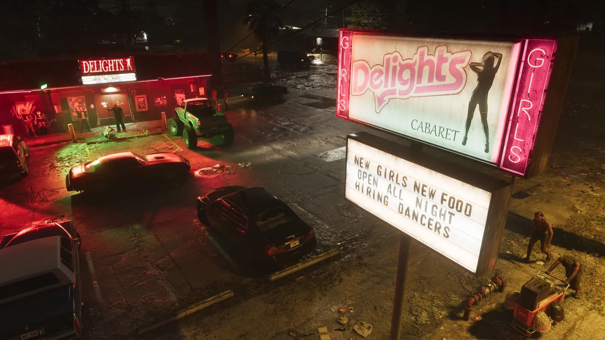
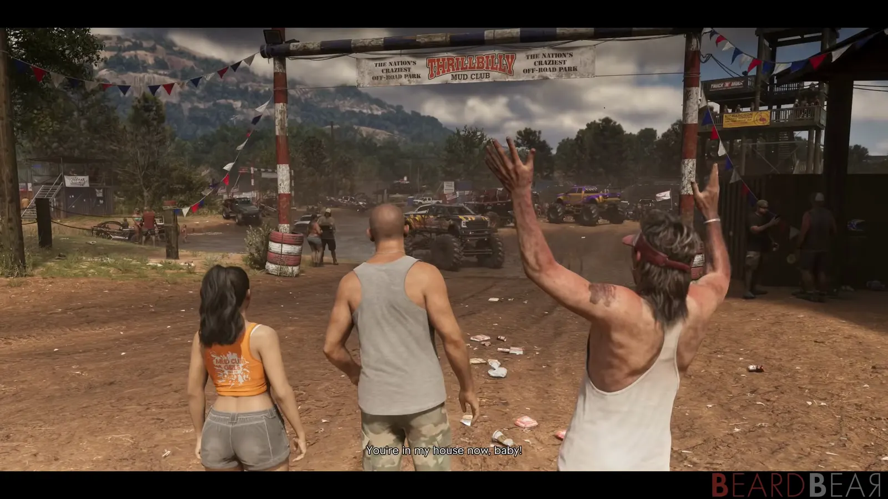
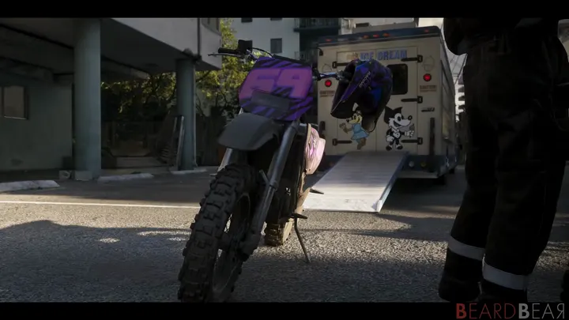
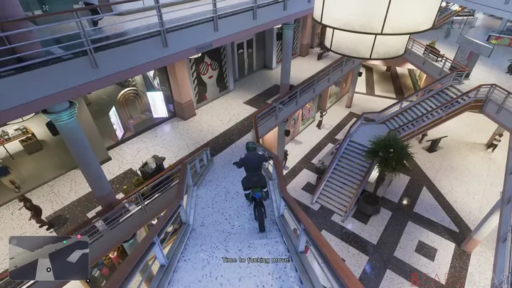
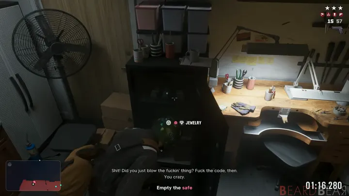
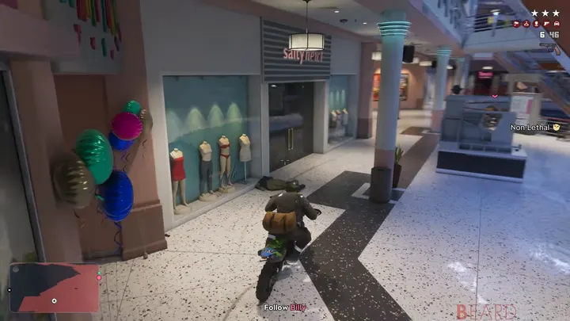
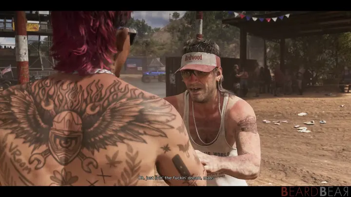
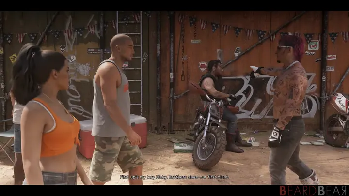
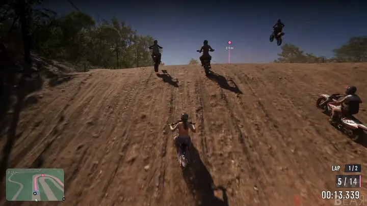
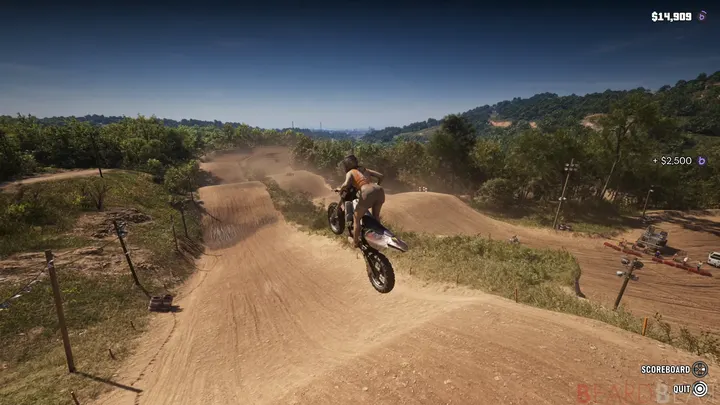

Билли (Billy) в GTA 6: все задания и прохождение
Опубликовано:

Коротко
- 5 заданий в цепочке — ниже каждое по шагам.
- В трофей Strangers & Freaks цепочка не засчитывается.
Билли — байкер из Mud Club в Port Gellhorn. Его задания — грязные гонки, налёты на мотоциклах и одна очень наглая кража у полиции. Начинается всё в главе 2, финал — скрытый трофей The Lone Rider и $10 000.
Все задания
| Задание | Где и когда |
|---|---|
| Thrillbillies | Глава 2 |
| Twist Wrist, Smash, Grab | Port Gellhorn |
| Mall Rats | Глава 3 |
| The Impaler | Штрафстоянка полиции в Ambrosia |
| Hometown Heroes | Mud Club |

Thrillbillies
- В Mud Club купите экипировку и возьмите в прокат мотоцикл у Roostere’s — Manchez или Sanchez. Лучше Sanchez.
- Гонка на 14 участников. 1-е место — $2 500, 3-е — $625.
- Главное — не приехать последним: тогда задание провалено.
Twist Wrist, Smash, Grab
- Начало — у скамейки в Port Gellhorn. Садитесь на Highwayman Sanchez.
- Инкассаторский фургон врежется в дерево — не стреляйте по нему.
- Поставьте заряд на заднюю дверь и заберите сумку.
- Sanchez потом можно оформить у Мозеса и оставить себе.








Mall Rats
- Прорвитесь на мотоцикле прямо через торговый центр.
- В ювелирном откройте сейф — взрывчаткой или кодом от персонала (у автора гайда PowerPyx был 4207, у вас может отличаться).
- Заезжайте на мотоцикле прямо в фургон.
- Если код не называют — не тратьте время, ставьте заряд.
The Impaler
- Угоните единственную чёрно-белую полицейскую машину. Ворота открывает кнопка слева от них.
- Сразу 3 звезды. Уходите по железнодорожным путям в тоннель к северу от Ambrosia.
- Машину нельзя сильно бить — иначе провал.
Hometown Heroes
- Гонка на треке: тараньте соперников.
- Вскройте сейф в офисе гонок.
- Отбейтесь от засад и доберитесь до сахарного завода.
- Часть событий финала — по сценарию, предотвратить их нельзя.








Частые вопросы
Где найти Билли в GTA 6?
В Mud Club в Port Gellhorn, задания начинаются в главе 2.
Какой трофей за задания Билли?
Скрытый трофей The Lone Rider за финал Hometown Heroes.
Источники: PowerPyx — «Thrillbillies», «Twist Wrist, Smash, Grab», «Mall Rats», «The Impaler», «Hometown Heroes», 19.11.2026. Кнопки — для PS5, в скобках — Xbox. Названия — как в английской версии игры.